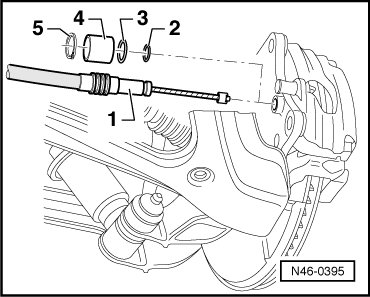

LEMON Manuals
: Even more car manuals for everyone: 1960-2025
Home
>>
Volkswagen
>>
2004
>>
Touareg (7LA) V6-3.2L (BAA)
>>
Repair and Diagnosis
>>
Brakes and Traction Control
>>
Parking Brake System
>>
Parking Brake Cable
>>
Locations
Parking Brake Cable: Locations
Park Brake Cable Overview

1
Rear brake cable
2
Sealing ring
3
Sealing ring
4
Sleeve
5
Securing ring